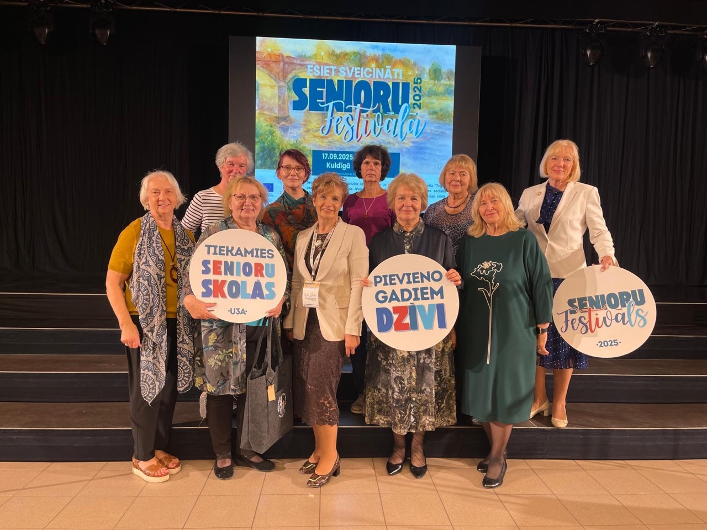
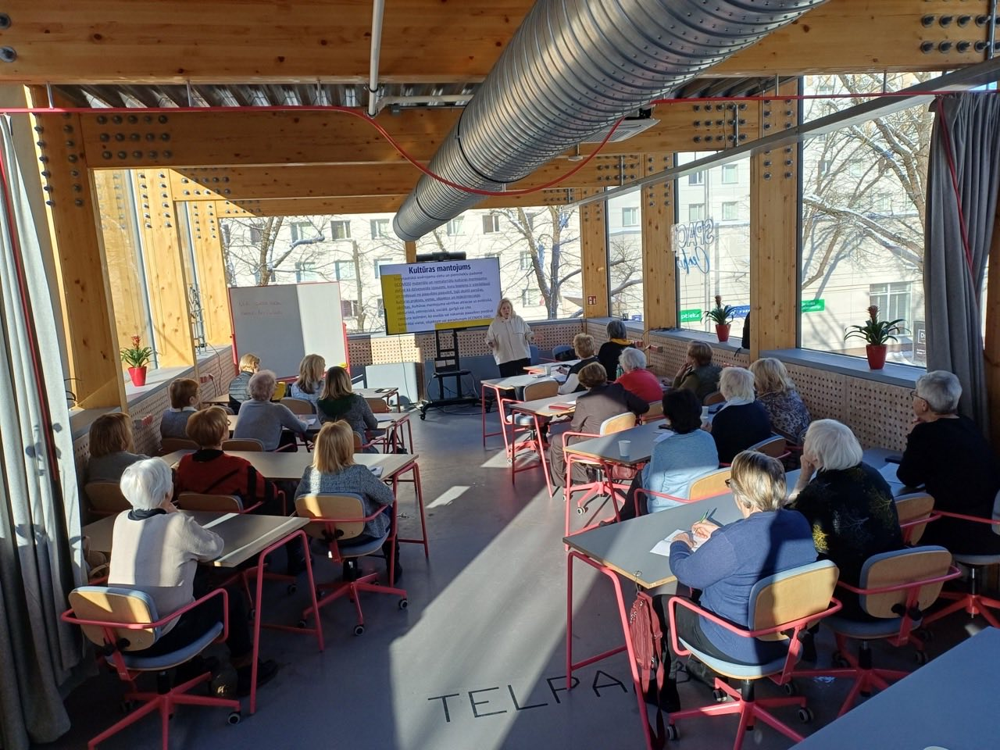
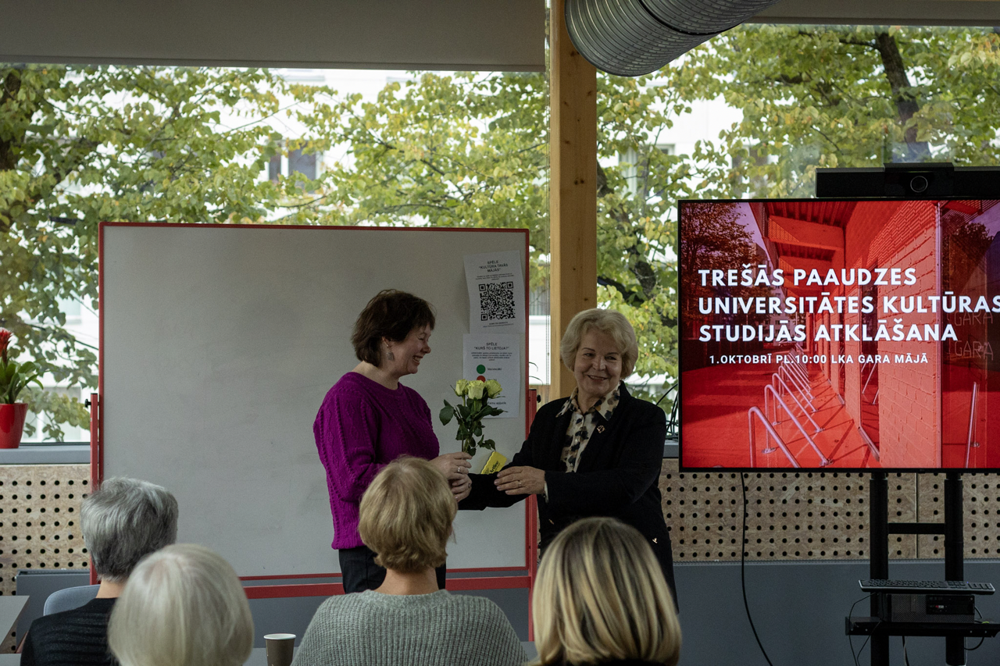
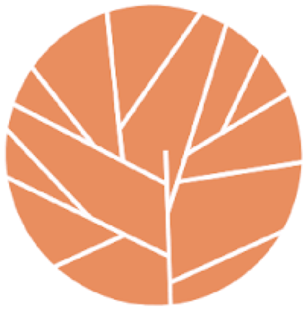
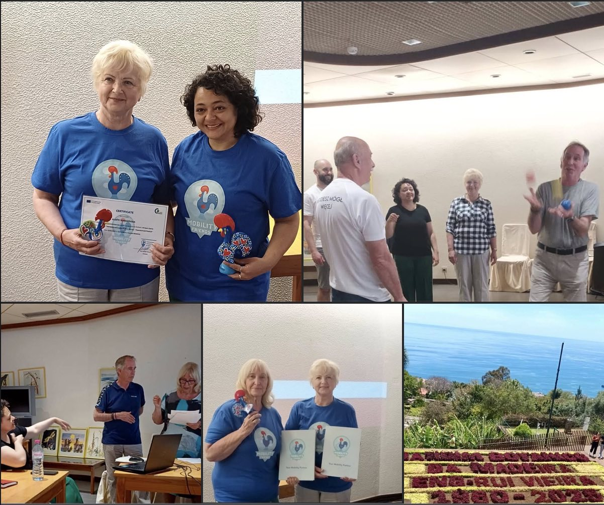
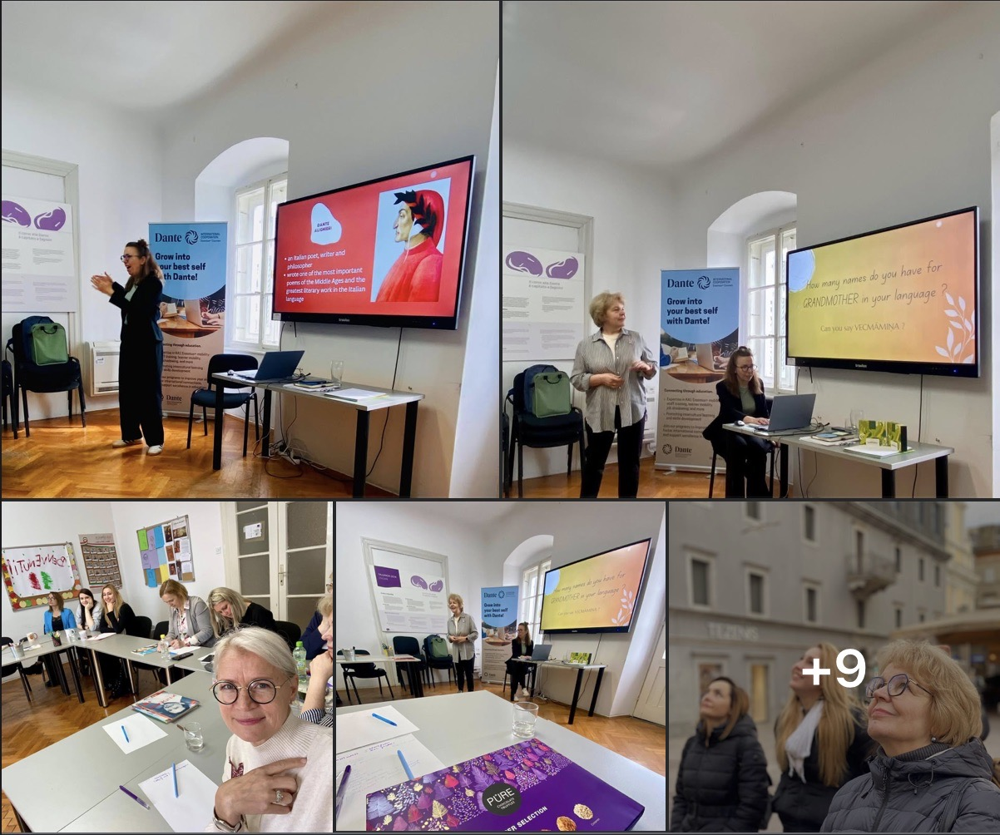

🎉 Senioru festivāls Kuldīgā! 17. septembrī notika Trešās paaudzes universitāšu NVO festivāls “Mūžs kā zināšanu ceļš”, kas pulcēja senioru skolas, ekspertus un viesus no Latvijas, Portugāles, Polijas, Lietuvas un Igaunijas.... See more


📅 Datums: 30. marts plkst. 14:00
📍 Norises vieta: Lutera Akadēmija, Alksnāja iela 3, Vecrīga
Trešās paaudzes universitāte aicina turpināt izglītoties un augt garīgi, intelektuāli un sociāli.
Nodarbībā padziļināsim izpratni par ticību un dzīves vērtībām, kā arī stiprināsim garīgo labklājību un iekšējo mieru.
Tēma: Lieldienas, Klusā nedēļa
Tiksimies ar: Rīgas Doma dekānu Eliju Godiņu
Trešās paaudzes universitātes VESELĪBAS fakultātes atklāšana
🕚 11:00 - 12:30
Lekcija: "Ēšanas paradumi un iespējamās korekcijas dzīves trešajā trimestrī"
Dalības maksa: 5 EUR
Pulcēšanās: vestibilā, 1. stāvā
Lekcijas tiek organizētas sadarbībā ar Rīgas Stradiņa universitātes Mūžizglītības centru un Ģimenes veselības centru, piedāvājot praktiskas un ikdienā noderīgas zināšanas.
Papildus informācija: vecmaminas.riga@gmail.com

Lekcijas senioriem Miera ielas kvartālā no 18. marta līdz 10. jūnijam. Dalība bez maksas, vietu skaits ierobežots.
📝 Pieteikties lekciju ciklam
📅 Datums: 25. februāris plkst. 10:00
📍 Norises vieta: LKA Gara māja (2. stāvs), Miera iela 58a, Rīga
Kultūras studiju nodarbībā runāsim par alternatīvo kultūras mantojumu - kā definēt mantojumu, kas neatbilst dominējošajai kultūras izpratnei.
Pievērsīsimies grafiti un ielu mākslai, paredzamajam kultūras mantojumam, kā arī holokausta vietu nozīmei kultūras atmiņas kontekstā.
Nodarbību vadīs: LKA mākslas vēstures docente Zane Grigoroviča.
Nepalaid garām interesantākos notikumus un aktualitātes – apskati sadaļu “Aktualitātes” -> “Notikumi” mūsu mājaslapā, lai uzzinātu par lekcijām, semināriem un citām aktivitātēm.
Aplūkot notikumus
Jauno, 2026. gadu, Trešās paaudzes universitātes lekcijas varēsim uzsākt ar
Latvijas Kultūras akadēmijas rektora, profesora
Dāvja Sīmaņa vieslekciju
“Kā skatīties kino?”,
21. janvārī plkst. 10:00, LKA Gara mājā.
To tad iezīmējam jau kalendārā!
📅 Iezīmējam šo datumu kalendārā!

Aplūkot facebook ierakstu
Vecmāmiņas.lv
September 17, 2025 at 8:00 PM · Public
🎉 Senioru festivāls Kuldīgā! 17. septembrī notika Trešās paaudzes universitāšu NVO festivāls “Mūžs kā zināšanu ceļš”, kas pulcēja senioru skolas, ekspertus un viesus no Latvijas, Portugāles, Polijas, Lietuvas un Igaunijas.... See more

Vecmāmiņas.lv
June 5, 2025 at 1:40 PM · Public
📖 Esam piedalījušās vēl vienā starptautiskā projektā👌 esam guvušas vēl vienu jaunu pieredzi un dalījušās ar savām dzīves pieredzēm👯♀️ 📖 Mācību centrs “Mobility Friends” Portugālē FUNŠALĀ (12.05. – 16.05.2025.) “Labklājība un dzīves kvalitāte senioru vecumā – teorija un prakse”... See more

Vecmāmiņas.lv
March 25, 2025 at 3:15 PM · Public
Hvala, Rijeka!!! 17.-21.marts 2025... See more
